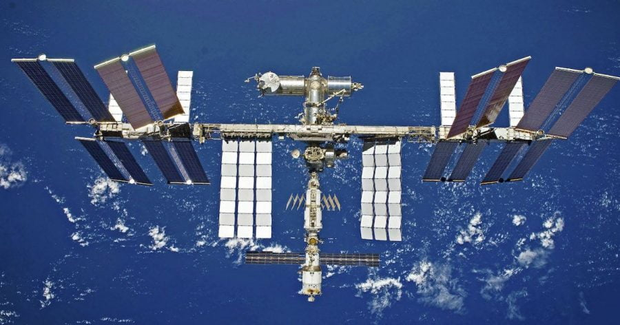

ရုရှား အာကာသ အေဂျင်စီရဲ့ အကြီးအကဲသစ်က သူ့နိုင်ငံ အနေနဲ့ အပြည်ပြည် ဆိုင်ရာ အာကာသ စခန်း (International Space Station) ကနေပြီး လာမယ့် ၂၀၂၄ အကုန်မှာ နှုတ်ထွက်တော့မှာ ဖြစ်တယ်လို့ ပြီးခဲ့တဲ့ အင်္ဂါနေ့က ကြေငြာ လိုက်ပါတယ်။ ဒါပေမယ့် အမေရိကန် ပြည်ထောင်စု နာဆာ အဖွဲ့ကြီးက တာဝန်ရှိ သူတွေကနော့ သူတို့ဆီကို တရားဝင် အကြောင်းကြား လာခြင်း မရှိသေးဘူးလို့ ဆိုပါတယ်။
ဒီ ကြေငြာချက်သာ မှန်ကန်ခဲ့မယ် ဆိုရင် ဆယ်စုနှစ် နှစ်ခုကျော် ကြာမြင့်ခဲ့တဲ့ အမေရိကန်-ရုရှား ပူးတွဲ အာကာသ စီမံကိန်း နိဂုံးချုပ် သွားခြင်းပဲ ဖြစ်ပါလိမ့်မယ်။
လက်ရှိ ဖြစ်ပေါ်နေတဲ့ အမေရိကန်နဲ့ ရုရှား နိုင်ငံ နှစ်ခုအကြား တင်းမာမှုတွေကြောင့် နှစ်နိုင်ငံ အာကာသ ပူးပေါင်း ဆောင်ရွက်မှု တွေရဲ့ အနာဂါတ် အလားအလာ တွေနဲ့ ပတ်သက်လို့ မေးခွန်းတွေ ထွက်ပေါ်လာ ခဲ့တာ ကြာမြင့် ခဲ့ပါပြီ။ ဒါပေမယ့် ရုရှား အာကာသ အေဂျင်စီ Roscosmos ရဲ့ အကြီးအကဲ ဖြစ်သူ ယူရီ ဘော်ရီဆော့ဗ် (Yuri Borisov) ရဲ့ ကြေငြာချက်ဟာ လူအများကို အံ့အား သင့်သွားစေခဲ့ပါတယ်။
ပြီးခဲ့တဲ့ နှစ်ပတ်ကမှ နှစ်နိုင်ငံ အာကာသယာဉ်တွေ ပေါ်မှာ ယာဉ်မှူးတွေ အပြန်အလှန် လိုက်ပါခွင့် သဘောတူ စာချွန်ကို လက်မှတ် ရေးထိုး ခဲ့ကြတာပါ။ ဒီ စာချုပ် လက်မှတ် ထိုးအပြီး နှစ်ပတ်ပဲ ကြာတဲ့ အချိန် ဒီ ကြေငြာချက် ထွက်ပေါ်လာခြင်းပဲ ဖြစ်ပါတယ်။
ရုရှား အာကာသ အကြီးအကဲရဲ့ ဒီ ကြေငြာချက် ထွက်ပေါ်လာ အပြီးမှာ နာဆာရဲ့ အကြီးအကဲ ဖြစ်သူ ဘီလ် နယ်လ်ဆင် (Bill Nelson) က ကြေငြာချက် တစ်စောင် ထုတ်ပြန် ခဲ့ပါတယ်။
နာဆာ အကြီးအကဲရဲ့ ကြေငြာချက်မှာ အမေရိကန် ပြည်ထောင်စု အနေနဲ့ အပြည်ပြည် ဆိုင်ရာ အာကာသ စခန်းကို ၂၀၃၀ ပြည့်နှစ်အထိ ဆက်လက် တာဝန်ထမ်းဆောင်နိုင်အောင် ဆောင်ရွက်သွားမယ်လို့ ဆိုထားပါတယ်။ ဒီ ကိစ္စ အတွက်လဲ မိတ်ဖက် အဖွဲ့ဝင် နိုင်ငံတွေနဲ့ ပူးပေါင်း ဆောင်ရွက်နေတယ်လို့ ကြေငြာချက်မှာ ဖော်ပြ ထားပါတယ်။
ဒီ ကြေငြာချက်မှာ နာဆာ အနေနဲ့ ဘယ် မိတ်ဖက် အဖွဲ့အစည်းရဲ့ ဆုံးဖြတ်ချက် ကိုမှ တရာဝင် သိရှိရခြင်း မရှိသေးကြောင်း ဆက်လက် ဖော်ပြ ထားပါတယ်။
နာဆာ အနေနဲ့ ကမ္ဘာပတ် လမ်းကြောင်း အနိမ့်ပိုင်းမှာ ဆက်လက် တည်ရှိနေနိုင်အောင် လိုအပ်တဲ့ အနာဂါတ် စွမ်းဆောင်ရည် တွေကို ဆက်လက် တည်ဆောက် သွားမယ်လို့လဲ ဖော်ပြ ထားပါတယ်။
အပြည်ပြည် ဆိုင်ရာ အာကာသ စခန်းကို ၁၉၉၈ ခုနှစ်မှာ လွှတ်တင် ခဲ့တာ ဖြစ်ပါတယ်။ ၂၀၀၀ ပြည့်နှစ် နိုဝင်ဘာ က စတင်ပြီး ပုံမှန် တာဝန်တွေကို စတင် ထမ်းဆောင် နိုင်ခဲ့ပါတယ်။
ဒီ အပြည်ပြည် ဆိုင်ရာ အာကာသ စခန်း စီမံကိန်းမှာ အမေရိကန်၊ ရုရှား တို့နဲ့အတူ ကနေဒါ၊ ဂျပန် နဲ့ ဥရောပ နိုင်ငံ ၁၁ နိုင်ငံက ပါဝင် ပူးပေါင်း ဆောင်ရွက်နေ ကြတာ ဖြစ်ပါတယ်။
ရုရှား အာကာသ အကြီးအကဲက ရုရှား သမတ ပူတင်နဲ့ တွေ့ဆုံစဉ် ပြောကြားရာမှာ သူတို့ အနေနဲ့ မိတ်ဖက် အဖွဲ့အစည်း တွေနဲ့ ချုပ်ဆိုထားတဲ့ သဘောတူညီမှု အားလုံးကို ဖြည့်ဆည်းပေး သွားမှာ ဖြစ်တယ်လို့ ဆိုပါတယ်။ ဒါပေမယ့် ၂၀၂၄ နောက်ပိုင်းမှာ အာကာသ စခန်းကနေ နှုတ်ထွက်ဖို့ ဆုံးဖြတ်ချက် ကိုတော့ ချပြီး သွားပြီ ဖြစ်တယ်လို့ ဆိုပါတယ်။
နာဆာရဲ့ အပြည်ပြည် ဆိုင်ရာ အာကာသ စခန်း ညွှန်ကြားရေးမှူး ဖြစ်သူ ရော်ဘင် ဂါတန် (Robyn Gatens) ကတော့ သူတို့ဆီကို ရုရှားကနေ တရားဝင် အကြောင်းကြား လာခြင်း မရှိသေးဘူးလို့ ဆိုပါတယ်။ နှစ်နိုင်ငံကြား ချုပ်ဆိုထားတဲ့ သဘောတူ စာချုပ်ရဲ့ စည်းမျဉ်းတွေ အရ ဒီလို နှုတ်ထွက်မယ်ဆို ကြိုတင် အကြောင်းကြားဖို့ လိုအပ်ပါတယ်။
“ဘယ်ဟာမှ တရားဝင် မဟုတ်သေးပါဘူး” လို့ သူက ဝါရှင်တန်မှာ ကျင်းပတဲ့ ကွန်ဖရင့် တစ်ခုမှာ ပြုလုပ်တဲ့ အင်တာဗျူးမှာ ပြောပါတယ်။ “ကျွန်တော်တို့ တရားဝင် ဘာအကြောင်းကြားစာမှ မရသေးပါဘူး” လို့ ပြောပါတယ်။
အိမ်ဖြူတော် ပြောရေးဆိုခွင့်ရှိသူ ကလဲ မော်စကို အနေနဲ့ အမေရိကန် ပြည်ထောင်စုကို တရားဝင် အကြောင်း ကြားလာတာမျိုး မရှိသေးဘူးလို့ ဆိုပါတယ်။
သူမက သတင်းထောက် များကို ပြောကြားရာမှာ အကယ်၍ ရုရှားက အပြည်ပြည် ဆိုင်ရာ အာကာသ စခန်းကနေ နှုတ်ထွက်သွားမယ် ဆိုရင် ဖြစ်လာမယ့် အကျိုး သက်ရောက်မှု တွေကို ခံနိုင်ဖို့ ကြိုတင်ပြင်ဆင် နေတယ်လို့ ဆိုပါတယ်။
ရုရှား အာကာသ အေဂျင်စီ Roscosmos ရဲ့ ပြောရေးဆိုခွင့် ရှိသူကို သတင်းထောက် တွေက ဆက်သွယ် မေးမြန်း ရာမှာလဲ သူက အေဂျင်ဆီရဲ့ အကြီးအကဲရဲ့ ကြေငြာချက် ကိုပဲ ပြန်လည် ညွှန်းဆို ခဲ့ပါတယ်။ ဒါပေမယ့် ဒီ ပြောကြားချက်ဟာ အေဂျင်ဆီ ရဲ့ တရားဝင် ရပ်တည်ချက်ကို ထင်ဟပ်ခြင်း ရှိမရှိ ဆိုတာနဲ့ ပတ်သက်လို့တော့ ဖြေကြားဖို့ ငြင်းဆန် ခဲ့ပါတယ်။
အာကာသ စခန်းပေါ်က ရုရှားနဲ့ အမေရိကန် အပိုင်းတွေဟာ တစ်ခုနဲ့ တစ်ခု အပြန်အလှန် မှိခိုနေ ရတာ ဖြစ်ပါတယ်။ အမေရိကန် အပိုင်းက အာကာသ စခန်းအတွက် လိုအပ်တဲ့ ဆိုလာ လျှပ်စစ်စွမ်းအင် ထုတ်ပေးပြီး အာကာသ စခန်း တည်ငြိမ်အောင် ထိန်းကျောင်းပေးတဲ့ gyroscope ကိုလဲ တပ်ဆင် ထားပါတယ်။
ရုရှား အပိုင်းကတော့ အာကာသ စခန်း ပြုတ်ကျမလာအောင် တွန်းအားပေးမယ့် ဒုံးစက်တွေကို တာဝန်ယူ ပေးထားပါတယ်။
အကယ်လို့ ရုရှုားကသာ ဒီ စီမံကိန်း ကနေ နှုတ်ထွက်သွားမယ် ဆိုရင် အာကာသ စခန်းကြီး ကမ္ဘာပတ် လမ်းကြောင်းထဲမှာ ရှိနေဖို့ လိုအပ်တဲ့ တွန်းကန်အား ဒုံးစက်တွေကို ဘယ်လို အစားထိုး မလဲ ဆိုတောတော့ သေချာ မသိရ သေးပါဘူး။
အပြည်ပြည်ဆိုင်ရာ အာကာသစခန်းမှ ၂၀၂၄ အကုန်တွင် နှုတ်ထွက်မည်ဟု ရုရှားကြေငြာ

July 27, 2022
Other Posts
- ကျွန်တော်တို့ရဲ့ စကြာဝဠာကြီးက ဒိုးနတ်ပုံ အဝိုင်းကြီးတဲ့ဗျာ
- အာကာသနယ်စပ်ကို မိုးပျံပူပေါင်းနဲ့ အလည်သွားကြမယ်
- သမုဒ္ဒရာ ကြမ်းပြင်မှ မီးတောင် ၁၉,၀၀၀ ကျော် ရှာတွေ့
- James Webb တယ်လီစကုပ် ကြီးရဲ့ အနက်ရှိုင်းဆုံး အကြိုဓါတ်ပုံ
- AI ဆရာဝန်က လူနာရဲ့ အခြေအနေကို ပိုမိုမှန်ကန်စွာ ခန့်မှန်းနိုင်ကြောင်းတွေ့ရှိ
- ဂလက်ဆီ နှစ်လုံး တိုက်မိတဲ့ ဓါတ်ပုံ
- အကယ်လို့သာ ကမ္ဘာလည်နှုန်း ပိုမြန်လာရင် ဘာတွေဖြစ်လာ နိုင်သလဲ
- SpaceX ကုန်တင်ယာဉ် အပြည်ပြည်ဆိုင်ရာ အာကာသစခန်းသို့ အောင်မြင်စွာ ဆိုက်ကပ်နိုင်ခဲ့
- တရုတ်ထက် ဦးအောင် လပေါ်မှာ သတ္တုတူးဖို့ နာဆာ ကြိုးပမ်းနေ
- SpaceX Crew-3 အောင်မြင်စွာ ပြန်လည်ဆင်းသက်